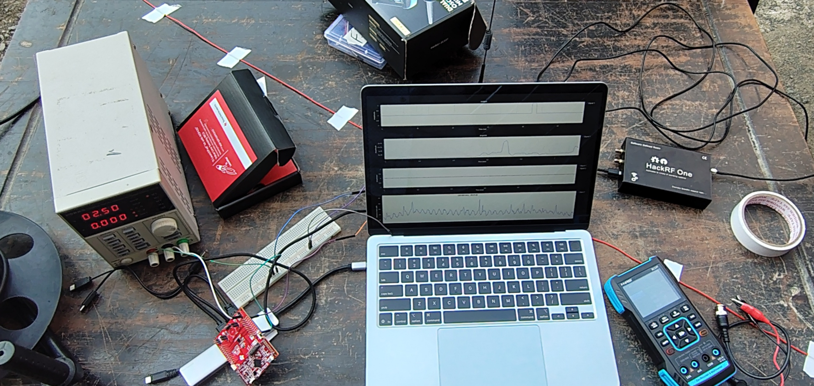
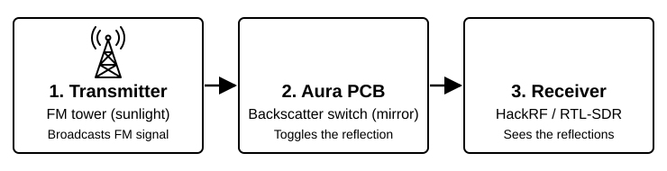

What if we could transmit a message or even a song without a battery, using only passive electronic components? Sounds interesting, right? In Project AURA, we make this a reality with a device that harvests electrical energy from the ambient FM signals around us and uses it to perform ambient FM backscatter communication. Instead of generating our own carrier wave, we embed our message onto the ambient FM signals already present in the surroundings, with an RF switch alternately reflecting and absorbing them. The backscattered message can then be decoded by a standard FM receiver, and also by software-defined radios (SDRs) like the HackRF or RTL-SDR.
Gallery

Setup for ambient backscatter on FM

Basic working of sending our own data using ambient signals
OOK transmission and reception between hackrf and rtl-sdr